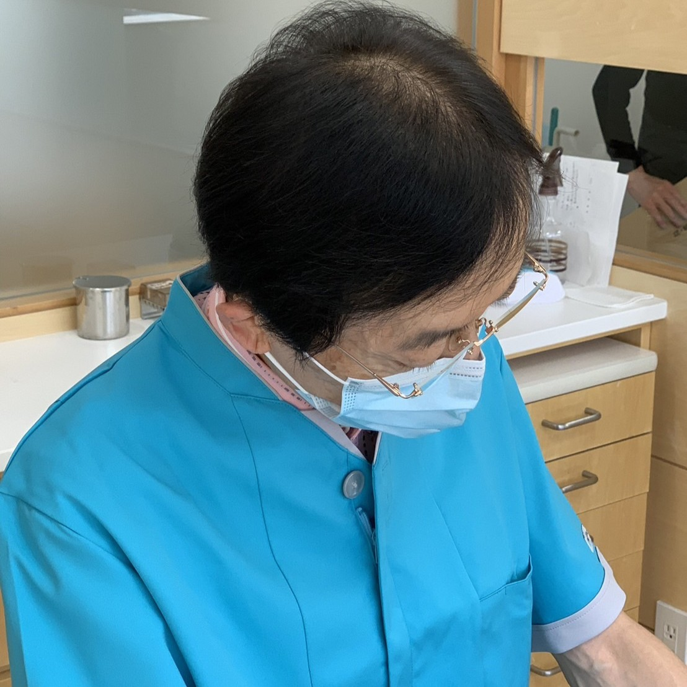
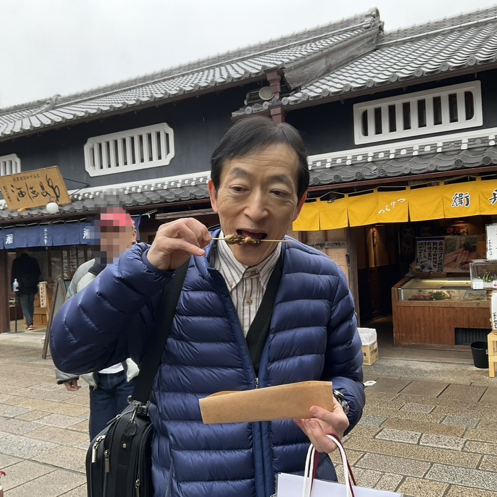

南平岸矯正歯科へようこそ


ごあいさつ
初めまして。南平岸矯正歯科院長、遠藤憲雄と申します。
当院は札幌市豊平区南平岸地区で初めての矯正歯科医院として2025年5月に開院いたしました。
札幌市内の矯正歯科医院で長年勤務してまいりましたが、これまで多くの難症例を含め、様々な症例を治療してきた経験や実績を基に、患者様の笑顔と豊かで幸せに満ちた人生に少しでもお役に立てるよう、そして地域医療に一歯科医院として貢献してゆきたいと考えております。
診療カレンダー
診療時間
| 曜日 | 月 | 火 | 水 | 木 | 金 | 土 | 日 |
|---|---|---|---|---|---|---|---|
| 10:00～12:00 | - | - | 休診 | - | - | ○ | 第2,4のみ○ |
| 14:00～19:00 | ○ | ○ | 休診 | ○ | ○ | ○ (13:00～17:00) | 第2,4のみ○ (～15:00) |
※昼休み 12:00～13:00
アクセス・お問い合わせ
住所：札幌市豊平区平岸３条１４丁目３－３ 紅桜観光ビル３階
電話番号：011-827-9901